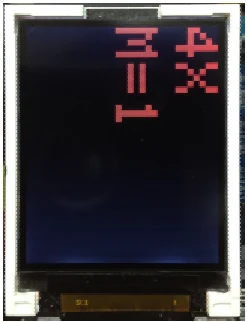
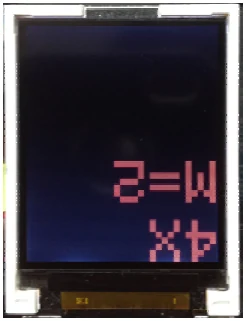
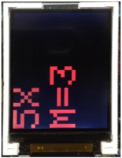

Activity 1-3 Fun with size and rotation text on GLCD
Font size displayed on the GLCD screen of the ATX2 board when it starts is the smallest. The number of dots per character is 6 x 10 dots (the actual font size is 5 x 7 dots). To adjust the font size, use setTextSize() function. The value size in () is time of the default size. For example :
setTextSize(2) is set text size to 2 times of the default size. The number of dots per character is 12 x 20 dots.
setTextSize(3) is set text size to 3 times of the default size. The number of dots per character is 18 x 30 dots.
When adjusting the font size is larger. Number of characters per line was reduced from 21 characters 16 lines. After set the text size 2 times, it will display 10 characters 8 lines. This is important factor that all programmers have to concentrate.
In addition to setting the font size, programmer can rotate the displaying by using the function glcdMode(). The default mode is 0 (glcdMode(0)) is displayed vertically. For another 3 modes 1, 2 and 3, rotate the displaying 90 degrees each. That is from 0 to 90 degrees (mode 1), 90 to 180 degrees (mode 2) and 180 to 270 degrees (mode 3).
(A1.3.1) Open the Arduino 1.0.7 software. Create the new sketch file. Type the code following the Listing A1-3. then save as the sketch.
#include <ATX2.h>
int x,m;
void setup()
{
//glcdSetColorWordRGB(); // Enable this function if displaying color
// of GLCD incorrect
setTextColor(GLCD_RED); // Set text color as red
}
void loop()
{
for (x=1;x<6;x++)
{
setTextSize(x); // Set text size
for(m=0;m<4;m++)
{
glcdClear(); // Clear screen
glcdMode(m); // Set rotation of display
glcd(0,0,"%dX",x); // Show text size
glcd(1,0,"M=%d",m); // Show rotation mode number
sleep(500);
}
}
}(A1.3.2) Apply the supply voltage to the ATX2 board and turn on power. Connect the USB cable between ATX2 board and computer.
(A1.3.3) Compile and upload the sketch to the ATX2 board by clicking on the
button or choose at menu File > Upload.
ATX2 display shows the number of text size and number of display mode. Starts from the upper left, upper right, lower right and lower left corner. Surrounding the display starts from 1X, 2X, 3X, 4X and 5X each with 4 display direction by the M value.
M = 0; display in vertical
M = 1; rotate displaying to 90o
Text size is 3 times (3X) Text size is 4 times (4X)

M = 2; rotate displaying to 180oM = 3; rotate displaying to 270o
Text size is 4 times (4X) Text size is 5 times (5X)


Original manual, pages 102–103